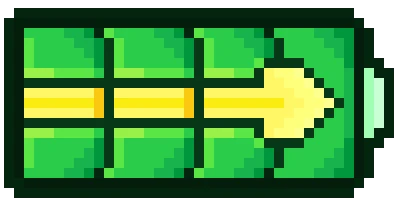

Fonctionnalités clés
Mode examen

Certifiée pour les épreuves officielles avec un mode sécurisé activable physiquement.
Programmable en Python

Éditeur intégré pour créer des scripts et automatiser les calculs.
Batterie rechargeable
Jusqu’à 30h d’autonomie sur batterie Li-ion standard.